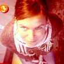
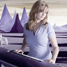

Crew


Regie
MARIEKE SCHELLART
Marieke (1973) is afgestudeerd als Industrieel Ontwerper aan de TU Delft. Na 8 jaar als art director bij verschillende reclame bureau's gewerkt te hebben, ging ze weer naar school om regie documentaire te studeren aan de HKU. Zij vroeg Anneke de Lind van Wijngaarden, wie zij eerder assisteerde, om haar te helpen bij haar film Ei voor later.
Camera & Montage
ANNEKE DE LIND VAN WIJNGAARDEN
Anneke (1971) is regisseur, cameravrouw en editor. Voor televisie maakte ze o.a. de jeugddocumentaires: Nikita, Tietjes en Danny's Parade. Met deze laatste film won zij de Beeld en Geluid Award 2008. Voor Ei voor later deed zij het camera werk en de montage. Anneke weet zich met haar camera bijna onzichtbaar te maken en komt zo heel dichtbij.www.annekedelindvanwijngaarden.com
Producent
REINETTE VAN DE STADT
Reinette (1974) werkte bij verschillende producenten als uitvoerend producent. Ze werkte aan verschillende speelfilms, zoals Het Zuiden van Martin Koolhoven, Manderlay van Lars von Trier. In 2003 richtte ze haar eigen productiebedrijf Trueworks op. Met Trueworks produceerde ze meer dan 6 documentaires en 4 korte fictie films waaronder Missen van Jochem de Vries, die geselecteerd was door het filmfestival in Cannes 2009.www.trueworks.nl
Muziek
SONJA VAN HAMEL
Sonja (1971) studeerde af aan de Gerrit Rietveld Academie in 1999. Ze maakt muziek, grafisch ontwerp en tekeningen. Sonja heeft al meerdere CD's op haar naam staan, voorheen met popduo BAUER en tegenwoordig als solo artiest. Ei voor later is de eerste documentaire waar zij de muziek voor heeft gemaakt. Haar gevoelige soms dromerige pop nummers passen goed bij de intieme vrouwelijke stijl van Ei voor later. Een aantal van de nummers zullen ook verschijnen op haar nieuwe CD die in 2011 zal uit komen.
www.sonjavanhamel.nl
Geluid
Arno van Beest - Bas van ZomerenMontage
Advies Govert JanseGeluidsnabewerking
Diederik Idenburg, Rob van de SchootbruggePostproductie beeld
PostofficeKleurcorrectie
Daphne MaiernaGrafisch ontwerp
Sander PlugWebsite
Fabrice Koopman - Filip MertensProductie NCRV
Yolande van der BlijEindredactie NCRV
Jelle Peter de RuiterMet dank aan NOS Journaal, RTL Nederland, Andere Tijden, VPRO
Deze film is mede mogelijk gemaakt door
Rathenau Instituut, Stichting Biotechnologie Nederland & VVAO
Ei voor later is geproduceerd door Trueworks in samenwerking met de NCRV